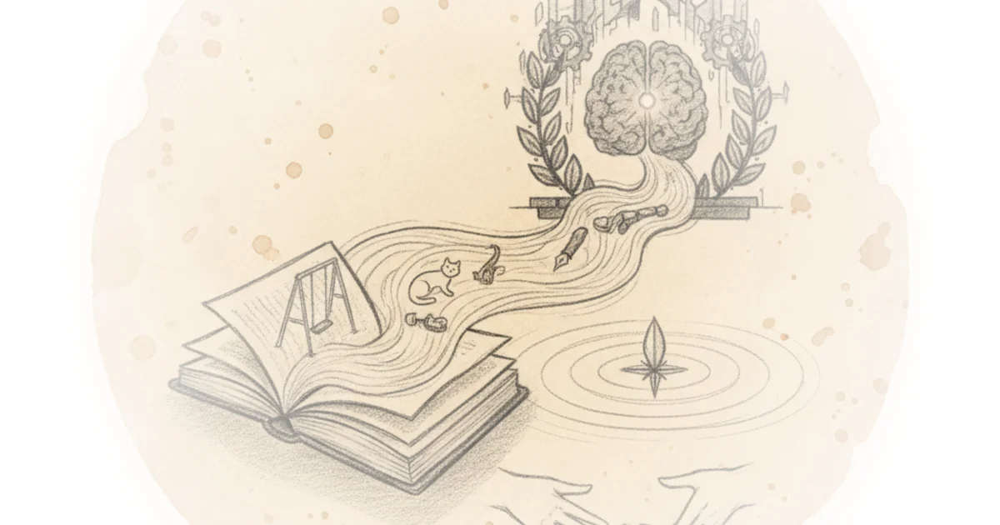
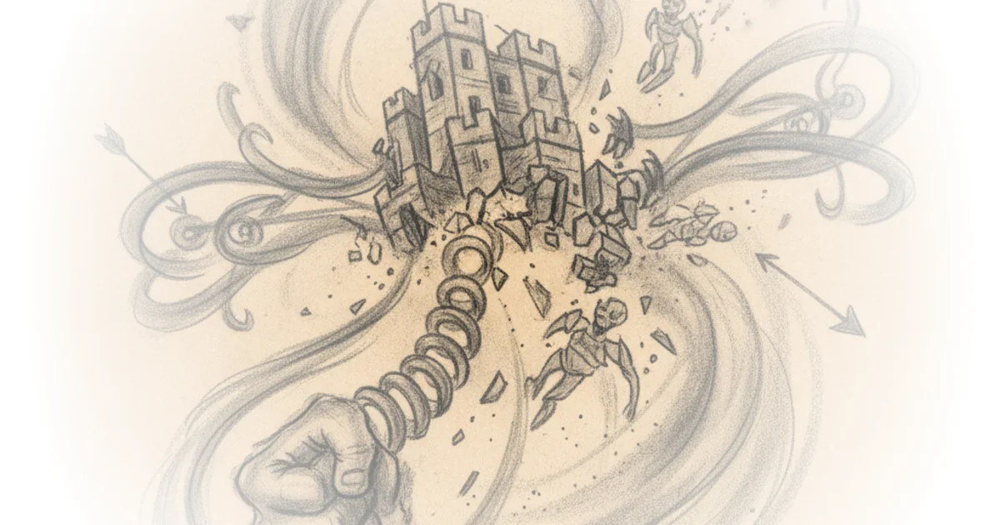
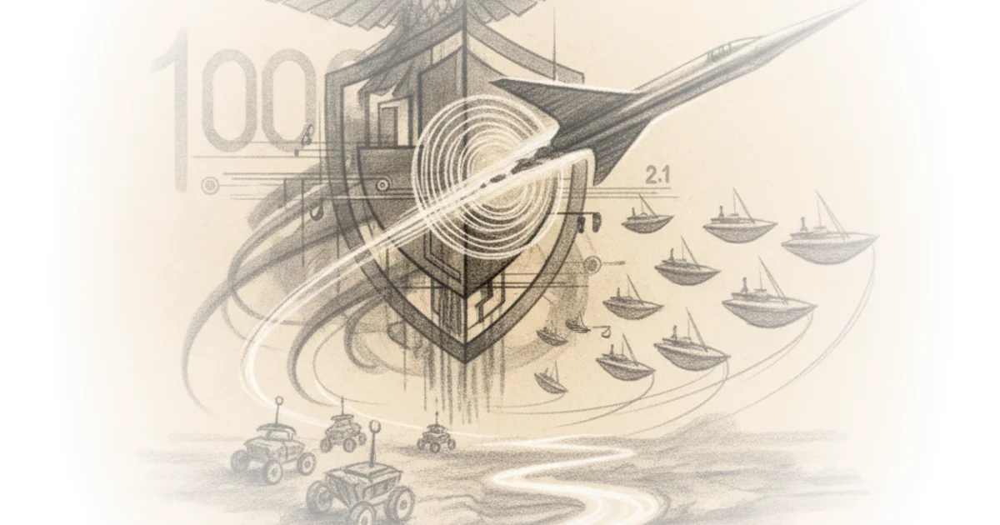
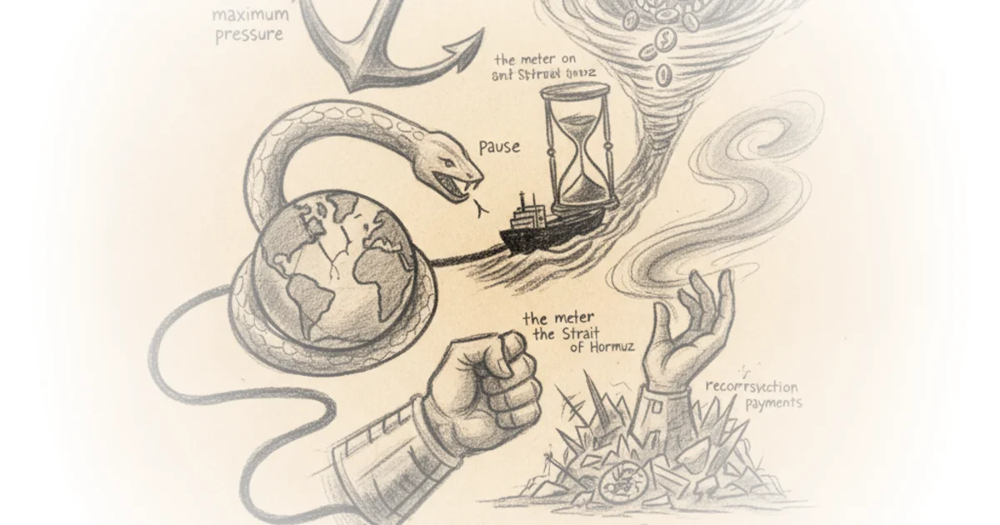

The tedious power of storytelling (02 jun 2026) must-we-pretend Cory Doctorow · Pluralistic ·Jun 2, 2026 · 17 min read · Culture
Lime axes speed limits for deliveroo riders Michael Macleod · London Centric ·Jun 2, 2026 · 12 min read · Housing & Cities
Inference is unlikely to ever be a low marginal cost operational node, & the other reasons why the… Brad DeLong · DeLong's Grasping Reality ·Jun 1, 2026 · 11 min read · AI & Tech
Stochastic parrots on the palatine hill: Monday MAMLMs Brad DeLong · DeLong's Grasping Reality ·Jun 1, 2026 · 11 min read · AI & Tech
Re: The truly abominable kevin hassett: Steve durlauf does the work of the lord: Life in the 2000s Brad DeLong · DeLong's Grasping Reality ·Jun 1, 2026 · 12 min read · Economics
Import AI 459: AI oversight is difficult; scaling laws for protein folding models; and pricing the… Jack Clark · Import AI ·Jun 1, 2026 · 17 min read · AI & Tech
The transformation problem was not something karl marx overlooked! & Other topics: History of… Brad DeLong · DeLong's Grasping Reality ·Jun 1, 2026 · 16 min read · Economics
LLMs were mostly (but not entirely) useless at Extra-Textual tasks involved in the composition of… Freddie deBoer · ·Jun 1, 2026 · 21 min read · AI & Tech
Molly crabapple's 'here where we live is our country' Cory Doctorow · Pluralistic ·Jun 1, 2026 · 19 min read · Literature
Redefining "pastor": Albert mohler's agenda Scot McKnight · Scot McKnight ·Jun 1, 2026 · 11 min read · Faith
Monopoly Round-Up: After SpaceX goes public, does the stock market finally fall? Matt Stoller · BIG by Matt Stoller ·May 31, 2026 · 15 min read · Economics
A nostalgic reread, a quintessentially booker book, and a brief reintroduction Sara Hildreth · Fiction Matters ·May 31, 2026 · 10 min read · Literature 
How Russia exploits Ukraine’s Greek community Tim Mak · The Counteroffensive ·May 31, 2026 · 13 min read · Foreign Policy
Weekend update #187: Trying to collapse the Russian army from Behind--What to watch out for Phillips P. O'Brien · Phillips P. O'Brien ·May 31, 2026 · 10 min read · Foreign Policy 
Highway to hell: Ukraine's logistics lockdown, Taiwan’s littoral command and China’s evolving… Mick Ryan · Mick Ryan ·May 30, 2026 · 18 min read · Defense
NatSec 100, musv 7, and mach 2.1 Various · Defense Tech and Acquisition ·May 30, 2026 · 53 min read · Defense 
The current balance in this Pause—Not end, but pause, perhaps perpetual pause—in the war in the… Brad DeLong · DeLong's Grasping Reality ·May 30, 2026 · 11 min read · Foreign Policy 
Progressive intellectuals: Image vs. Reality Michael Huemer · Fake Nous ·May 30, 2026 · 10 min read · Philosophy
Data centers: Counting gigawatts before they hatch Various · Energy Bad Boys ·May 30, 2026 · 10 min read · AI & Tech
The mystery gasoline surcharge: How oil incumbents are trying to maintain fossil fuel dominance Matt Stoller · BIG by Matt Stoller ·May 29, 2026 · 12 min read · Economics
AI dark output: The visible cost of invisible output Dylan Patel · SemiAnalysis ·May 29, 2026 · 22 min read · AI & Tech
"Agentic AI" is a bonfire of the tokens while fab capacity, power grids, and P&Ls are the brakes:… Brad DeLong · DeLong's Grasping Reality ·May 29, 2026 · 15 min read · AI & Tech